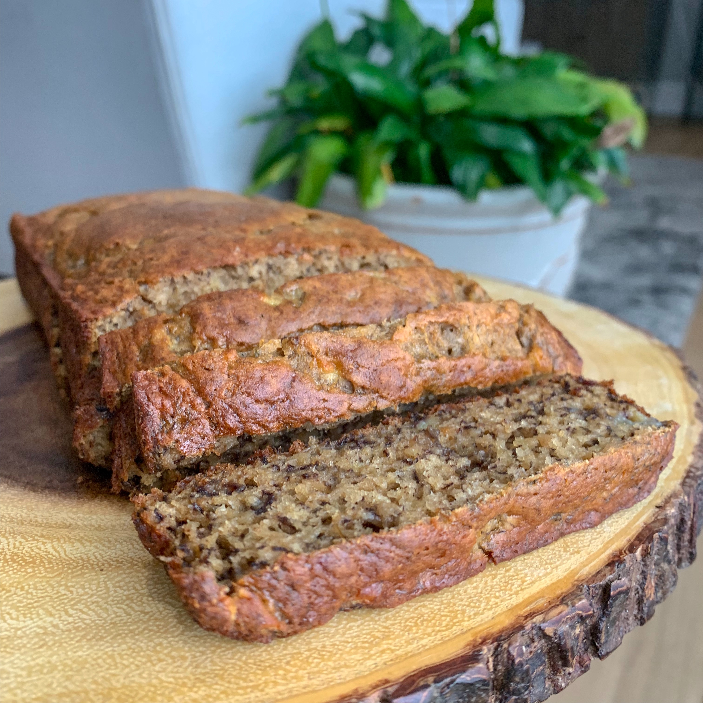

Skinny Banana Bread

Description
This delicious and moist banana bread is low in fat, high in vitamins, high in fiber, and all around good for you. A huge hit among my health conscious friends and family! Feel free to add chocolate chips, raisins, or other nuts.
Ingredients
- 1¾ cups whole wheat flour
- 3 teaspoons baking powder
- 2 teaspoons ground cinnamon
- ½ teaspoon baking soda
- ¼ teaspoon salt
- ¼ teaspoon ground nutmeg
- 3 mashed ripe bananas, or to taste
- 2 eggs
- ½ cup applesauce
- ⅓ cup brown sugar
- 3 tablespoons flaxseed meal
- ⅛ cup milk
- ½ tablespoon vanilla extract
- ½ cup chopped walnuts (Optional)
Steps
- Preheat the oven to 325 degrees F (165 degrees C). Grease two 4x8-inch loaf pans.
- Combine flour, baking powder, cinnamon, baking soda, salt, and nutmeg in a bowl.
- Combine bananas, eggs, applesauce, brown sugar, flaxseed meal, milk, and vanilla extract in a large bowl and mix until well combined. Gradually add flour mixture to the banana mixture, stirring until uniform. Add walnuts and mix lightly just until evenly distributed. Pour batter evenly into the prepared loaf pans.
- Bake in the preheated oven until a toothpick inserted in the center comes out clean, 45 to 60 minutes.
- Remove loaves from oven and set aside to cool for 15 minutes. Remove loaves from pans and let cool about 5 minutes more before serving.